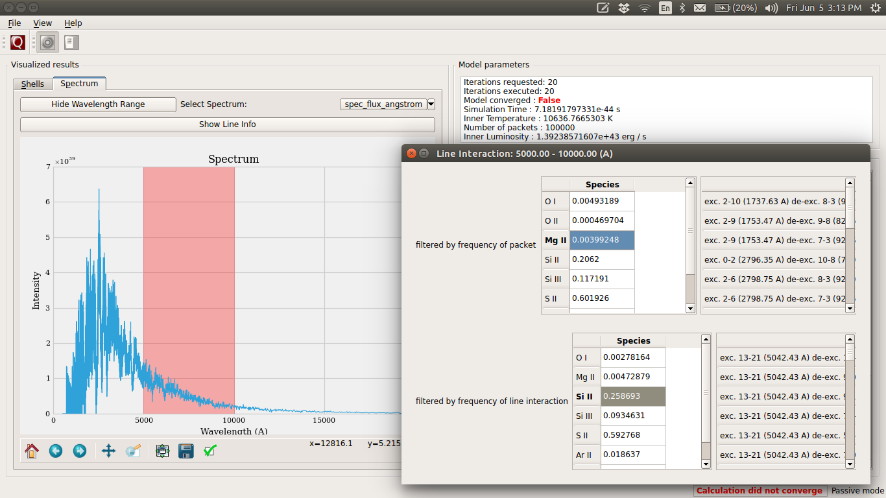

Old Graphical User Interface (Outdated)¶
TARDIS uses the PyQt5 framework for its cross-platform interface.
This module can be imported inside IPython console or Jupyter Notebook. The console provides the event loop and the place to create/calculate the tardis model. So the module is basically a tool to visualize results.
To setup and run the GUI (under development) follow these steps:
The GUI can use one of two python bindings for qt, namely PyQt5 and PySide2. You can choose which binding is used by setting the environment variable QT_API in your bash. Currently, the TARDIS team uses PyQT5.
1. Installing required packages
PyQt is installed by default in the tardis enviroment (see installation). To use PySide2:
conda activate tardis
conda install pyside2 -c conda-forge --no-update-deps
2. Choosing between PySide2 and PyQt5
#To choose PySide
export QT_API=pyside
#To choose PyQt - this is what the TARDIS team does
export QT_API=pyqt
3. An example of creating a model and GUI
First, get the example file tardis_example.yml.
To download a copy of the atomic database (if you haven’t already), add:
from tardis.io.atom_data.util import download_atom_data
download_atom_data('kurucz_cd23_chianti_H_He')
To show the GUI from a Jupyter Notebook, use the following commands:
from tardis import run_tardis
from tardis.gui import interface
sim = run_tardis('tardis_example.yml', 'kurucz_cd23_chianti_H_He.h5')
interface.show(sim)
If you just want to run from a configuration file and show the results, you can do that outside the Jupyter notebook. Navigate to the folder where you installed TARDIS, go to tardis/tardis/gui, and use the following command.
python interface.py path-to-yaml-configuration-file path-to-atomic-data-file
Running Instructions¶
Decide which Qt binding you want to use (PySide or PyQt) and accordingly set QT_API in shell:
export QT_API=pyside
or:
export QT_API=pyqt
Start the IPython console with eventloop integration:
ipython
Display your model:
from tardis import run_tardis
mdl = run_tardis('tardis_example.yml','kurucz_cd23_chianti_H_He.h5')
from tardis.gui import interface
interface.show(mdl)
(WIP) You can also run a configuration from the shell. To do this, first set QT_API in the shell. Next, navigate to the TARDIS installation folder and go to tardis/tardis/gui. Then use the command:
python interface.py path-to-configuration-file path-to-atomic-data-file
GUI Layout and Features¶
When you launch the GUI, the first screen that you see will be something like the snapshot below. You can inspect the plot of shells on this window and use the toggle button to change between the plot of dilution factor and the radiation temperature in shells.

Shell Info¶
To see the abundances in a shell, double-click on the shell number in the table. You can follow a similar strategy in the tables that appear to bring up the ion and level populations for each shell. The snapshot below shows all the tables that you can bring up by successively clicking the horizontal table headers. This feature is not supported at the moment.

Line Info¶
If you switch to the spectrum tab, you can see the spectrum plot and a button to show line info. Once again, you can double-click the table headers to get further information. The snapshot below shows all the tables that you can bring up in this window. This feature is not supported at the moment.
{kind=link}